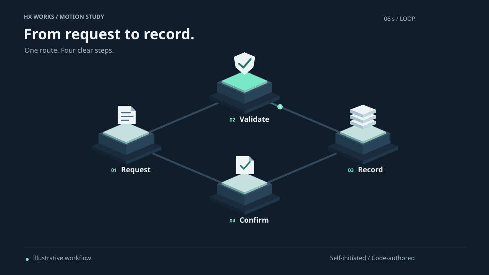

ONE ROUTE. FOUR CLEAR STEPS.
From request
to record.
An original isometric sequence, rebuilt as live 3D.
Select a step. Follow the packet. Scroll for a small change in perspective.
Explore the workflow
Loading local 3D module…
Click a 3D node or choose a step below. Keyboard: Tab, Enter, arrow keys, or 1–4 while the scene is focused. Page scrolling stays native.
SELECTED / 01
Request
A document marks the beginning of the illustrative route.
Preparing motion controls…
Packet route: Request → Validate
SMALL, INSPECTABLE INTERACTION
A moving point.
A readable route.
The four platforms, paper, shield and stacked records are native 3D meshes. Selection changes the highlighted platform. The packet follows a six-second loop. Scroll adds a bounded camera turn; reduced motion keeps the view still.
THIS VISIT / OBSERVED VALUES
- First WebGL draw
- Not measured yet
- Animation frame intervals
- Waiting for visible animation frames
- Current scene
- Not available yet
First draw measures navigation start to the first render call returning, not screen paint. Frame intervals sample requestAnimationFrame while the packet runs; they are not GPU frame times or a 60fps guarantee. Results depend on the device, viewport and browser.